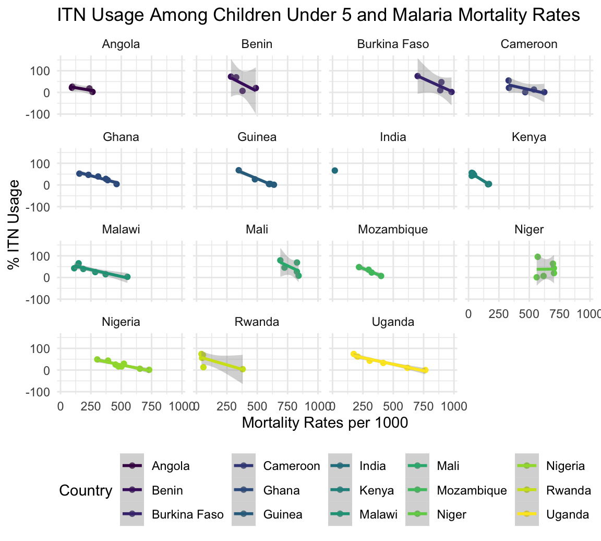

Project Report
Motivation
Although America is not a malaria hotspot, according to CDC, half of the world’s population lives in high risk malaria transmission regions. Our interest in Malaria stems from our individual experiences with Malaria has most of us have ties to countries that have high prevalence of Malaria. In exploring different data sets we found some interesting patterns. Most importantly, we found that Malaria can be eradicated even in countries that are current hot spots if proper preventive measures are followed.
Malaria is a vector borne disease that is preventable and curable. The parasite responsible for causing malaria is Plasmodium spp. These parasites are carried by the female anopheles mosquito. Malaria is more common in regions with high humidity and rainfall. The people at most risk for malaria include; infants, children under 5, pregnant women, HIV/AIDS patients, non-immune migrants, and travelers.
Relevant Sources
The World Malaria Report provides annual updates on Malaria trends around the world. The report also contains information about yearly investments, research and tracks the progress of all intervention areas. The information provided in the report is often received from national malaria control programmes in endemic countries
Malaria Atlas project is a platform that disseminates Malaria data via their Repository for Open Access Data (ROAD-MAP) project. On this platform one can find spatial distribution of Malaria prevalence, incidence, intervention and other important Malaria topics.
Global land temperature by country
This is repackaged data from a newer compilation put together by the Berkeley Earth, which is affiliated with Lawrence Berkeley National Laboratory. The Berkeley Earth Surface Temperature Study combines 1.6 billion temperature reports from 16 pre-existing archives.
This data compiles the average temperature of 16 different countries from the years 1796 through 2013 with the corresponding Month and Day.
Initial questions
The following were initial questions we tried to answer at the beginning.
- What is the relationship between species of mosquitoes?
- Can we visualize evolution of species over time?
- Is there overlap of mosquito species?
- Is the proportion of mosquito species the same across all continents?
- Do the rates of evolution change over time (how long were a species dominant during a time period?)
- Trends over years
- Heat, precipitation, vegetation, etc over a year with mosquito prevalence/malaria incidence
- Do areas with higher sickle cell traits have less malaria incidence?
- Compare time periods
Due to scarcity of data, we were unable to explore some of the initial questions we had set out to answer. As we continued to work with the datasets we had we were able to gete a feel for the questions we could answer given the limitations of our data.
Furthermore, in order to get the most out of our data, we filtered by a list of our countries of interest. These countries of interest according to WHO had the highest prevalence and incidence of Malaria. This way, we focused more on data from critical countries.
Data: Source, scraping method, cleaning, etc.
Explore Cases
Causes
For vectors (mosquitoes) and parasites of Malaria, We used vector data from Malaria Atlas Project, and parasite data from WHO Malaria Report 2019. The Malaria Atlas data was already tidy, so we only had to filter by our countries of interest. The WHO data on the other hand needed to be cleaned up. The original data had 11 variables: Country/area, year, 2010 to 2018 (each year was one variable). The final tidied data contained four variables: country, species, years, and cases. After tidying the data, Only P. falciparum and P.vivax parasite species remained because they were the predominant causes of Malaria in our countries of interest.
Correlations
The data that was used to analyze weather patterns, all came from the Berkeley Earth afiliated with the Lawrence Berkeley National Laboratory. We worked with the data from “The Berkeley Earth Surface Temperature Study” to document average temperature (°C) for 16 different countries from 1793-2006. We then separated the data into five year intervals that overlapped with time periods of high incidences(1990-1995) and low incidences (2000-2005) of Malaria in 16 different countries that overlapped with the Mortality data to better represent other aspects of the project. This will create more comparable datasets to create a comparison with other factors.
Insecticide Treated Bed Nets: Data Sources
Both variables came from separate datasets that were gathered via surveys and tracked globally across countries. The analysis used a combined dataset to understand the impact of bednets usage on childhood mortality. The team looked at multiple sources to access data available in a structured format and explored datasets from the World Malaria Report 2019, UNICEF Data Warehouse, and finally landed on using the Our World in Data since the dataset had the most bednets related data. Each of the datasets we explored did not have much data about bednets per country.
Indoor residual spraying: Data Sources
We accessed the WHO STAT data collected about IRS spraying. Because this is a practice not used as much anymore, there was not as much data available and our analysis was not broken down by country. We used the WHO dataset for mortality and prevalence since we did not have enough data about age related usage of IRS measures.
Antimalarial drugs: Data Sources
We accessed the WHO STAT data collected about ACT usage.
Exploratory analysis
Explore Cases
Causes
Since the mosquito species data had small sample size (< 30 for most species) and not consistent across years, we used maps to visualize cumulative number of different mosquito species for Africa and Asia. Most malaria cases were diagnosed in these regions. For confirmed cases by parasite species, we plotted line plots of confirmed cases by P. falciparum in countries of interest, from 2010 to 2018, since it was the dominant cause of malaria for most countries. Additionally, a plot for confirmed cases by P. vivax in India because only India had consistent data for both P. falciparum and P. vivax, and the numbers were quite similar.
Correlations
The final visualization compared the average temperature and the mortality data of Malaria filtered to include 16 countries to show a trend in higher mortality data attributed to certain temperature values. Most reported deaths because of malaria seem to be clustered in the 20-30 °C range with some outlier values of higher reported death count still within the range of 20-30 °C.
Final_comparisonInterventions
Childhood Mortality Rates
In the fight against malaria, children under the age of 5 are disproportionately affected across the world. The chart below visualizes data from the organization our world in data and shows the breakdown of death rates from malaria (measured as number of deaths per 100,000 individuals) by age category.
The following analysis will look into malaria prevention measures shown to be effective in managing malaria in the countries of interest that bear about 85% global burden of the disease. These countries are: Nigeria, Democratic Republic of the Congo, Uganda, Mozambique, Côte d’Ivoire, Niger, Burkina Faso, Mali, Angola, United Republic of Tanzania, India, Ghana, Cameroon, Rwanda, Benin, Malawi, Kenya, Guinea, Burundi.
Prevention
Vector control is the main way to prevent and reduce malaria transmission. If coverage of vector control interventions within a specific area is high enough, then a measure of protection will be conferred across the community.
WHO recommends protection for all people at risk of malaria with effective malaria vector control. Two forms of vector control – insecticide-treated mosquito nets and indoor residual spraying – are effective in a wide range of circumstances.
Insecticide-treated nets
Sleeping under an insecticide-treated net (ITN) can reduce contact between mosquitoes and humans by providing both a physical barrier and an insecticidal effect.
The below analysis quantifies the impact of usage of bednets by children under 5 and how mortality rates for that age group can be improved.
Key Variables
Childhood mortality under age 5: (
under_5_mortality_rate) number of deaths per 100,000 individuals. The available data ranges from the years 1990 through 2017.% of ITN Usage by children under 5: (
use_of_insecticide_treated_bed_nets_percent_of_under_5_population) % of children under 5 who sleep under a bednet. The available data ranges from the years 1999 - 2017.
Hypothesis Testing
- Ho: Use of bednets by children under 5 has no impact to under 5 mortality rates
- H1: Use of bednets by children under 5 reduces mortality rates for children under 5
Results
Scatterplot of % ITN usage against that year’s associated mortality rates, broken up by country. The dataset for bednets only included data for 12 out of 19 countries of interest.

| term | estimate | std.error | statistic | p.value |
|---|---|---|---|---|
| use_of_insecticide_treated_bed_nets_percent_of_under_5_population | -3.588902 | 0.4243716 | -8.4569817 | 0.0000000 |
| countryBenin | 287.515330 | 62.4156867 | 4.6064595 | 0.0000209 |
| countryBurkina Faso | 753.282695 | 61.8868689 | 12.1719309 | 0.0000000 |
| countryCameroon | 289.727252 | 58.3269741 | 4.9672944 | 0.0000056 |
| countryGhana | 200.805811 | 56.4825159 | 3.5551853 | 0.0007297 |
| countryGuinea | 375.864521 | 56.1249829 | 6.6969200 | 0.0000000 |
| countryIndia | 24.093241 | 99.4630444 | 0.2422331 | 0.8093990 |
| countryKenya | -33.000786 | 56.6109049 | -0.5829404 | 0.5620478 |
| countryMalawi | 150.376472 | 55.0437615 | 2.7319440 | 0.0081906 |
| countryMali | 712.586805 | 59.5990008 | 11.9563549 | 0.0000000 |
| countryMozambique | 177.422703 | 61.6689632 | 2.8770178 | 0.0054986 |
| countryNiger | 545.656736 | 56.8536534 | 9.5975668 | 0.0000000 |
| countryNigeria | 354.337991 | 53.3136051 | 6.6462958 | 0.0000000 |
| countryRwanda | 40.289071 | 57.5891139 | 0.6995953 | 0.4867967 |
| countryUganda | 313.454578 | 56.7617443 | 5.5222859 | 0.0000007 |
Based on the above analysis, we can reject the null hypothesis and conclude that ITN usage among children improves mortality rates by 4 children per 100,000 children when controlled for countries. We explored an interaction effect between country and use of ITNs, but found no statistically signficant effect, but the dataset might also not be well powered to detect that effect. India, Kenya and Rwanda were also countries that were shown to not have a statistically significant effect - most likely because of lack of data in those countries.
Indoor residual spraying
Indoor residual spraying (IRS) with insecticides is another powerful way to rapidly reduce malaria transmission. It involves spraying the inside of housing structures with an insecticide, typically once or twice per year. To confer significant community protection, IRS should be implemented at a high level of coverage.
Globally, IRS protection declined from a peak of 5% in 2010 to 2% in 2018, with decreases seen across all WHO regions, apart from the WHO Eastern Mediterranean Region. The declines in IRS coverage are occurring as countries switch from pyrethroid insecticides to more expensive alternatives to mitigate mosquito resistance to pyrethroids.
Key Variables
Mortality (%):
mortalityThis variable was calculated from the WHO data which has population at risk per year per country and number of deaths attributed to malaria per year per country.% of Households with IRS in Last 12 Months:
percent_of_households_with_irs_in_last_12_monthsThis variable was accessed from a collection of WHO datasets that had it compiled based on global surveys.
Hypothesis Testing
- Ho: IRS spraying will not impact country level mortality rates
- H1: IRS spraying will reduce country level mortality rates
Results
The following graph shows a weak relationship between IRS spraying and mortality rates due to lack of data.

| term | estimate | std.error | statistic | p.value |
|---|---|---|---|---|
| percent_of_households_with_irs_in_last_12_months | -0.0013375 | 0.0010863 | -1.231297 | 0.2531786 |
We cannot reject the null hypothesis that IRS does not impact country level mortality rates. However, this is most likely due to lack of data and the usage of IRS spraying declining to mitigate mosquito-resistance.
Antimalarial drugs
Antimalarial medicines can also be used to prevent malaria. For travellers, malaria can be prevented through chemoprophylaxis, which suppresses the blood stage of malaria infections, thereby preventing malaria disease.
The best available treatment for P. falciparum malaria is an artemisinin-based combination therapy (ACT). The WHO has collected data around children under 5 being treated with ACT when diagnosed with malaria or exhibiting symptoms. We’ll be using that data to understand the impact of ACT on malaria prevalence and mortality.
Key Variables
Prevalance (%):
prevalenceThis variable was calculated from the WHO data which has population at risk per year per country and number of cases of malaria per year per country.Mortality (%):
mortalityThis variable was calculated from the WHO data which has population at risk per year per country and number of deaths attributed to malaria per year per country.% of Children Under 5 Who Took ACTs:
percent_of_children_5_years_with_fever_in_last_2_weeks_who_took_an_act_among_those_who_received_any_antimalarialThis variable was accessed from a collection of WHO datasets that had it compiled based on global surveys.
Hypothesis Testing
Prevalence
- Ho: ACT will not impact country level malaria prevalence rates
- H1: ACT will reduce country level malaria prevalence rates
Mortality
- Ho: ACT will not impact country level malaria mortality rates
- H1: ACT will reduce country level malaria mortality rates
Results
The below analysis shows the impact on prevalence and mortality rates if children are treated with ACT as an antimalarial if they are infected.

As with the IRS data, there is not as much data collected around ACT usage among children. There is a weak relationship in improvements in prevelance and mortality with ACT usage.
Analyzing the data using linear regression showed that there was not enough power to reject the null hypothesis for both mortality and prevalence.
| term | estimate | std.error | statistic | p.value |
|---|---|---|---|---|
| percent_of_households_with_irs_in_last_12_months | -0.0013375 | 0.0010863 | -1.231297 | 0.2531786 |
| term | estimate | std.error | statistic | p.value |
|---|---|---|---|---|
| percent_of_households_with_irs_in_last_12_months | -0.0013375 | 0.0010863 | -1.231297 | 0.2531786 |
Conclusions
The above analyses looks across malaria prevention methods using ITNs, IRS, and ACT usage. The dataset was the most comprehensive for how much data was available for bednets and we were able to confirm a relationship with ITN usage and mortality.
A work by Nidhi Patel, Wura Olawole, Hanfei Qi, Laura Gomez Merchan, and Murrel Pereira
© Copyright 2020 The Malaria Eradication Project Team, All Rights Reserved | Powered by Github.io